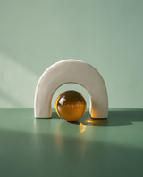
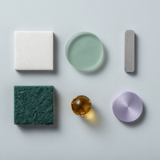
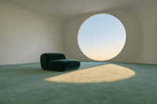

Welcome back. You were writing “Why now”.
“Teams don't need another dashboard. They need fewer reasons to open one.”
Next small step: tighten the pricing paragraph.
roadmap.docpricing-notes2 tabsNote: check churn with Ana
In music, a fermata asks the player to hold a note for as long as feels right, then carry on. It's the only mark in notation that hands the timing back to the performer.
Most productivity tools treat a pause as a failure. The streak breaks, the badge turns red, the count of overdue items climbs. [PRODUCT NAME] treats a pause as part of the work, and the fermata gives that belief a shape.
The mark is an arch with a point resting beneath it. Read it as a held breath, a door left open, a bookmark in a score. When you're interrupted, your work is held, never lost. When you come back, you continue from the exact note you left on.
Round one asked for a calm, retro-futurist product. This revision gives it one idea strong enough to organise everything else: the symbol, the type details, the product's signature screens and the way things move.
“A fermata is the composer saying: I trust you to know how long this should last.”The brand promise, in one line
Display. A geometric sans in the lineage of the typefaces that labelled the space age. Set light, large and tight: −4.5% to −6%.
The human aside. One word per headline, pull quotes, and the marginal notes the product writes to you.
Interface. Warm, open and highly legible from 12px, so long sessions stay easy on the eyes.
Readouts. Times, durations and labels, set small and spaced like an instrument panel.
The timer's colon is two sodium dots, one drawn from the symbol's proportions. It's the only colour on the focus screen.
Q1 roadmap held at 10:42
A small fermata replaces the word "paused" in running text. It reads as "kept for you", never as "late".
Adagio · Andante · Allegro
Energy settings borrow tempo markings, always with plain words underneath: slow, steady, brisk.
Display XL · Jost 200 · 120/0.7819Display L · Jost 300 · 58/1.02Welcome back.Aside · Newsreader It · 27/1.32You were writing "Why now".Body · Hanken 16.5/1.55Three things matter today. The rest can wait, and that's fine.Readout · Martian Mono 11 · +12%10:42 → 14:06 · 3 H 24 MIN AWAY#EEF0ECGround. 55% of every screen.#F8F8F5Raised surfaces.#1F4A46Fields, primary actions, the Return.#13191CType and rules.#BCD7CDTints.#CAC5E3#E6A445
A · BRAND OBJECT
B · MATERIALS
C · SPACEAn editorial page, not a dashboard. A large date, a tempo you choose, a short typeset list and a margin where the product leaves quiet notes. Habits read as a rhythm on a staff, where skipped days are rests, not failures.
Walk after lunchFour walks, three rests. Rests are part of the rhythm.
The product's signature screen. After any interruption, the page turns to lagoon and shows your last sentence, your next step and what you had open. One button. It turns "where was I?" into a single tap.
“Teams don't need another dashboard. They need fewer reasons to open one.”
Next small step: tighten the pricing paragraph.
Night palette, one number and one warm point. The pause button is called Hold and wears the symbol. Notifications wait politely and say when they'll arrive.
Notifications are holding until 14:57.
Plan your day, protect your focus and build habits at a human pace. When life interrupts, [PRODUCT NAME] holds your place, so you never start from zero.
cubic-bezier(.16,1,.3,1) · 700mscubic-bezier(.7,0,.84,0) · 450msText sits on a 4-column measure inside 12. The margin column holds the product's notes, as in a well-made book.
Plates and fields are nearly square. Only things you press are round, so the eye learns what's interactive.
Hairlines, not boxes, separate content. Shadow appears only on plates that float above a field.
| Round one | Revision | |
|---|---|---|
| Big idea | A calm mood, with no single concept. | The fermata: hold, then continue. One idea drives the symbol, type, screens and motion. |
| Symbol | A half-sun on a horizon, common in wellness brands. | A constructed fermata with one proportion system, an app icon, small-size line version and three lockups. |
| Type | One good family, set light, with no signature details. | Jost with Newsreader Italic asides, a sodium "held colon", an inline fermata accent and tempo labels. |
| Imagery | Flat pastel vector scenes. | A live 3D brand object, four art-directed references and written rules for light, material and people. |
| Product | A standard three-column task screen. | Three signature moments: Today set as a page, The Return, and Focus. Habits are a rhythm with rests. |
| Feel | Pleasant, soft, a bit generic. | Editorial and confident. Large colour fields, generous space, one warm point of colour. |